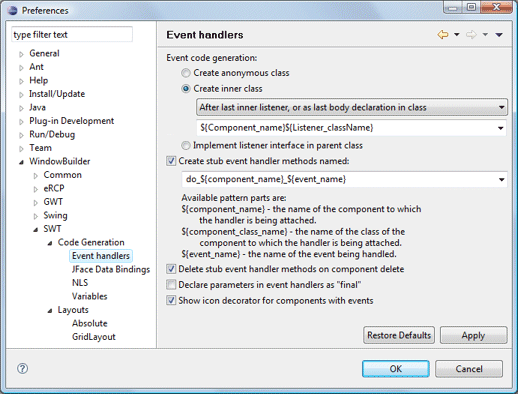
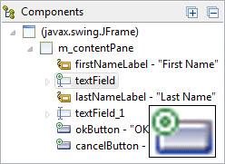

|  This page is used to control various SWT > Code Generation > Event Handler options. Event code generationThis preference determines how event handlers are generated. The first option, Create anonymous class, generates an anonymous adapter class located inline with the widget definition. For example:
The second option, Create inner class, generates an adapter
class as an inner class. Options are provided to add the inner class at
the beginning or end of the class as well as specify the pattern used to
name the inner class. For example:
The pattern can include the template variables (names enclosed between "${" and "}") shown below. Capitalizing the name of any variable will cause the value of the variable to be capitalized before it is inserted into the resulting text.
The third option, Implement listener interface in parent class,
adds the the listener interface to the parent class and adds the
appropriate methods to the class definition. For example:
Create stub event handler methods namedThis preference determines whether the text field below it is enabled. Now whenever an event handler is added, a method stub is created with the name given in the text field. A line of code is also added to the event handler which calls the newly created method. If you move your mouse over the text field, a tool tip will appear which gives you information on how to specify the names of the method stubs generated. Use this field to change the pattern used to generate the name of the method that will be invoked from within the event handler. The pattern can include the template variables (names enclosed between "${" and "}") shown below. Capitalizing the name of any variable will cause the value of the variable to be capitalized before it is inserted into the resulting text.
Delete stub event handler methods on component deleteThis preference determines whether handler methods associated with a component are deleted when the component is deleted. Declare parameters in event handlers as 'final'This preference determines whether 'final' is added to the parameters in event handlers. Show icon decorator for components with eventsThis preference controls whether components with event handlers are shown with an icon decorator.  |